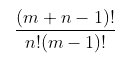
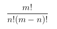
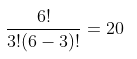
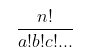
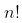
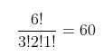
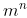
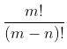
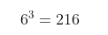

Esta página web te ayudará a comprender los principios básicos de las principales técnicas de conteo y combinatoria, incluyendo la permutación, la combinación y otros conceptos importantes. También tendrás acceso a calculadoras para resolver problemas de este tipo.

¿Qué es el conteo y la combinatoria?
Son un conjunto de técnicas usadas para determinar el número total de resultados que pueden haber
a partir de hacer combinaciones en uno o varios conjuntos de elementos. Estas tecnicas son usadas
cuando es dificil contar manualmente las combinaciones posibles de un conjunto de elementos.
Por ejemplo, si queremos saber de cuantas maneras posibles podemos parquear 3 carros distintos, uno al lado
del otro, podemos hacerlo manualmente y llegarémos a la conclusión de que podemos
parquearlos de 6 maneras distintas. Ahora bien, si en vez de 3 carros tenemos 6, el número de combinaciones
posibles sube hasta 144, así que podemos ver que para la mayoría de problemas resulta necesario alguna
técnica que nos permita contar el número de combinaciones posibles de una manera más fácil y rapida. Para esto
utilizaremos las tecnicas de conteo y combinatoria.
Principio multiplicativo
Cuando tenemos 2 o más sucesos que pueden ocurrir de varias formas, pero que no dependen el uno del otro
y que pueden ocurrir al mismo tiempo, usamos el principio multiplicativo. Si tenemos un suceso S1 que
puede ocurrir de distintas maneras y un suceso S2 que puede ocurrir de otras tantas maneras, independientemente
el uno del otro y al mismo tiempo, entonces los sucesos conjuntamente pueden ocurrir de S1 × S2 formas distintas.
Supongamos que tenemos 2 dados y queremos saber cuantas combinaciones posibles podemos obtener al
lanzarlos al mismo tiempo. Es claro que el resultado de un dado no depende del otro y por lo tanto son
sucesos independientes, entonces multiplicamos los 6 resultados posibles del primer dado por los 6
resultados posibles del segundo dado, teniendo un resultado de 36 combinaciones distintas posibles.
Principio aditivo
En este caso, a diferencia del principio multiplicativo, el principio aditivo se usa cuando tenemos 2 o más
sucesos que pueden ocurrir de varias formas, que sí dependen de alguna manera el uno del otro y que no pueden
ocurrir al mismo tiempo, es decir, que son excluyentes.
Un ejemplo para diferenciar el principio aditivo del multiplicativo es el siguiente: si tienes 3 camisetas
y 3 pantalones, puedes combinarlos de 9 maneras distintas ya que usamos una camiseta y un pantalón al mismo
tiempo, por lo que usamos el principio multiplicativo para determinar las posibles combinaciones.
Ahora, si tienes 3 zapatos y 3 chanclas, te puedes calzar de 6 maneras distintas ya que no se pueden usar
zapatos y chanclas a la vez (en teoría), por lo que en este caso usamos el principio aditivo
para contar las distintas posibilidades.
Combinación
Una combinación es una agrupación de elementos de un conjunto sin importar el orden. Por ejemplo, si vamos a hacer una ensalada con tomate, lechuga y cebolla, no importa el orden en el que añadamos los ingredientes ya que el resultado va a ser el mismo. Ahora bien, si tenemos 6 ingredientes, pero solo podemos usar 3, podemos contar el número de combinaciones posibles haciendo uso de las 2 siguientes formulas:
Hay elementos repetidos
No hay elementos repetidos

Donde:
- m es el numero total de elementos en el conjunto.
- n es el numero total de elementos que se seleccionan.
Es decir, podemos usar estas formulas siempre que necesitemos contar las combinaciones posibles entre elementos
de un conjuno siempre y cuando el orden no importe y no intervengan todos los elementos. Volviendo al ejemplo
de la ensalada, teniendo 6 ingredientes pero solo pudiendo seleccionar 3, usamos la formula para casos donde
no hay elementos repetidos ya que los ingredientes son distintos. Así quedaría la fórmula:
- m = 6
- n = 3

Por lo tanto hay 20 maneras distintas de preparar la ensalada con esas condiciones.
Permutación
Una permutación es una agrupación de elementos de un conjunto, pero a diferencia de la combinación, en la permutación si importa el orden y si entran todos los elementos. Por ejemplo, si estamos en una competencia, no es lo mismo quedar en el primer puesto que en el segundo o el tercero, entonces el orden si importa y para problemas de este tipo usamos la permutación, las fórmulas son las siguientes:
Hay elementos repetidos
No hay elementos repetidos

Donde:
- n es la cantidad total de elementos.
- En el caso de que hayan elementos repetidos: a, b, c... son la cantidad de cada elemento repetido.
Entonces supongamos que tenemos 6 letras: A, B, B, C, A, A y queremos formar palabras de 6 letras. En este caso
importa el orden ya que, por ejemplo, no es lo mismo BABCAA que ACBABA. En este caso también entran todos los
elementos, por lo que estamos hablando de una permutación con repetición. Aplicando la fórmula correspondiente
obtenemos el siguiente resultado:
- n = 6 (número total de letras)
- a = 3 (número de veces que se repite la letra A)
- b = 2 (número de veces que se repite la letra B)
- c = 1 (la C no se repite, así que es 1.)

Entonces se pueden formar en total 60 palabras distintas. Si tuvieramos el mismo problema pero sin ninguna letra
repetida, entonces simplemente utilizaríamos la fórmula de n! obteniendo un total de 720 palabras distintas.
Variación
La variación es bastante similar a la permutación, con la única diferencia de que en la variación no entran todos los elementos del conjunto. Si tomamos el mismo ejemplo que vimos en la permutación, donde tenemos 6 letras: A, B, B, C, A, A pero en este caso no queremos formar palabras de 6 letras, sino de 3 letras, entonces debemos usar la variación y sus fórmulas para resolver el problema ya que no entran todos los elementos. Las fórmulas son las siguientes:
Hay elementos repetidos
No hay elementos repetidos

Donde:
- m es el número total de elementos.
- n es el número de elementos a seleccionar.
Entonces para resolver el problema, usamos la fórmula de variación para elementos repetidos de esta manera:
- m es el número total de letras (6).
- n es el número de letras que vamos a seleccionar (3).

Por lo tanto podemos formar 216 palabras distintas de 3 letras con las 6 letras A, B, B, C, A, A.
Calculadoras
Utiliza las siguientes calculadoras para ayudarte a resolver problemas de conteo y combinatoria:
Calculadora de combinación
Si tienes un problema donde no importa el orden de los elementos y no entran todos los elementos, usa esta calculadora:
Hay elementos repetidos
Resultado:
No hay elementos repetidos
Resultado:
- m es el numero total de elementos en el conjunto.
- n es el numero total de elementos que se seleccionan.
Calculadora de permutación
Si tienes un problema donde si importa el orden de los elementos y si entran todos los elementos, usa esta calculadora:
Hay elementos repetidos
Resultado:
No hay elementos repetidos
Resultado:
- n es el numero total de elementos en el conjunto.
- En el caso de haber elementos repetidos: a,b,c,... son la cantidad de veces que se repite cada elemento.
Ingresa cada número separado por comas y sin espacios.
Calculadora de variación
Si tienes un problema donde si importa el orden de los elementos y no entran todos los elementos, usa esta calculadora:
Hay elementos repetidos
Resultado:
No hay elementos repetidos
Resultado:
- m es el número total de elementos.
- n es el número de elementos a seleccionar.
Calculadora de principio multiplicativo
Si tienes un problema donde ocurren 2 o más sucesos que ocurren al mismo tiempo y que no dependen el uno del otro, usa esta cauculadora:
Resultado:
- a,b,c,... son las distintas posibilidades de cada uno de los sucesos. Ingresa cada número separado por comas y sin espacios.
Calculadora de principio aditivo
Si tienes un problema donde ocurren 2 o más sucesos que sí dependen de alguna manera el uno del otro y que no pueden ocurrir al mismo tiempo, usa esta calculadora:
Resultado:
- a,b,c,... son las distintas posibilidades de cada uno de los sucesos. Ingresa cada número separado por comas y sin espacios.